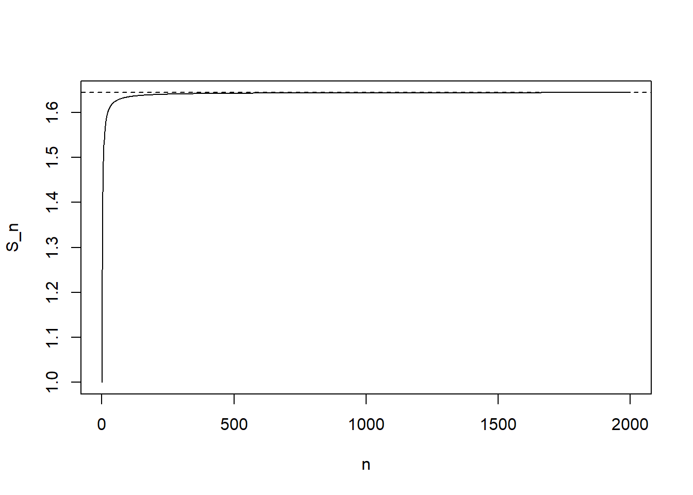

# Load only the allowed package
library(dslabs)Problem set 2
For these exercises, do not load any packages other than dslabs.
Make sure to use vectorization whenever possible (avoid loops unless explicitly allowed).
1
What is the sum of the first 150 positive integers? Use the functions seq and sum to compute the sum with R for any n.
# Step 1: define n
n <- 150
# Step 2: create the sequence 1, 2, ..., n
x <- seq(1, n)
# Step 3: take the sum
# (replace NA with your answer)
ans <- NA
ans[1] NA# Extension: write one line that works for any n (change n above)
# sum(seq(1, n))2
Load the murders dataset from dslabs. Use the function str to examine the structure of the murders object.
- What are the column names used by the data frame for these five variables: state name, abbreviation, region, population, total murders?
- Show the subset of
murdersshowing states with less than 1.2 per 100,000 deaths. - Show all variables.
# Examine the structure
str(murders)'data.frame': 51 obs. of 5 variables:
$ state : chr "Alabama" "Alaska" "Arizona" "Arkansas" ...
$ abb : chr "AL" "AK" "AZ" "AR" ...
$ region : Factor w/ 4 levels "Northeast","South",..: 2 4 4 2 4 4 1 2 2 2 ...
$ population: num 4779736 710231 6392017 2915918 37253956 ...
$ total : num 135 19 232 93 1257 ...# Step: show column names
names(murders)[1] "state" "abb" "region" "population" "total" # Step 1: compute murder rate per 100,000
rate <- murders$total / murders$population * 100000
# Step 2: identify which states have rate < 1.2
idx <- rate < 1.2
# Step 3: subset the data frame using idx
murders_low <- murders[idx, ]
# Step 4: show the subset
murders_low state abb region population total
12 Hawaii HI West 1360301 7
13 Idaho ID West 1567582 12
16 Iowa IA North Central 3046355 21
20 Maine ME Northeast 1328361 11
24 Minnesota MN North Central 5303925 53
30 New Hampshire NH Northeast 1316470 5
35 North Dakota ND North Central 672591 4
38 Oregon OR West 3831074 36
42 South Dakota SD North Central 814180 8
45 Utah UT West 2763885 22
46 Vermont VT Northeast 625741 2
51 Wyoming WY West 563626 53
Show the subset of murders showing states with less than 1.2 per 100,000 deaths and in the Northeast of the US. Do not show the region variable.
# Step 1: compute rate (or reuse from Q2 if still in your environment)
rate <- murders$total / murders$population * 100000
# Step 2: logical condition for low-rate states
low <- rate < 1.2
# Step 3: logical condition for Northeast region
ne <- murders$region == "Northeast"
# Step 4: combine conditions (use &)
keep <- low & ne
# Step 5: subset rows
out <- murders[keep, ]
# Step 6: remove the region column
# Hint: use out[, -which(names(out)=="region")] or select columns by name
out_no_region <- out[, names(out) != "region"]
out_no_region state abb population total
20 Maine ME 1328361 11
30 New Hampshire NH 1316470 5
46 Vermont VT 625741 24
Among states with a murder rate less than 1.2 per 100,000, show the smallest population state (show the state name, population, and rate).
# Step 1: compute rate
rate <- murders$total / murders$population * 100000
# Step 2: subset to states with rate < 1.2
low <- rate < 1.2
# Step 3: get populations for just those states
pop_low <- murders$population[low]
# Step 4: find index (within the low subset) of the smallest population
# Hint: use which.min
j <- which.min(pop_low)
# Step 5: convert to the original row index
# Hint: which(low) gives the row numbers that are TRUE
rows_low <- which(low)
i <- rows_low[j]
# Step 6: report state, population, and rate (as a small data frame)
data.frame(
state = murders$state[i],
population = murders$population[i],
rate = rate[i]
) state population rate
1 Wyoming 563626 0.88711315
Show the state with a population of more than 8 million with the lowest murder rate (show the state name, population, and rate).
# Step 1: compute rate
rate <- murders$total / murders$population * 100000
# Step 2: create logical vector for pop > 8 million
big <- murders$population > 8e6
# Step 3: compute rates for those states
rate_big <- rate[big]
# Step 4: find the smallest rate among big-pop states
j <- which.min(rate_big)
# Step 5: map back to original row index
rows_big <- which(big)
i <- rows_big[j]
# Step 6: report
data.frame(
state = murders$state[i],
population = murders$population[i],
rate = rate[i]
) state population rate
1 New York 19378102 2.667966
Compute the murder rate for each region of the US (total murders divided by total population times 100,000). Return a data frame with one row per region and columns region and rate.
# Step 1: list the region names
regions <- unique(murders$region)
regions[1] South West Northeast North Central
Levels: Northeast South North Central West# Step 2: compute total murders per region
murders_by_region <- tapply(murders$total, murders$region, sum)
# Step 3: compute total population per region
pop_by_region <- tapply(murders$population, murders$region, sum)
# Step 4: compute rates per region
rate_by_region <- murders_by_region / pop_by_region * 100000
# Step 5: build a data frame
region_rates <- data.frame(
region = names(rate_by_region),
rate = as.numeric(rate_by_region)
)
region_rates region rate
1 Northeast 2.655592
2 South 3.626558
3 North Central 2.731334
4 West 2.6561757
Create a vector of numbers that starts at 5, does not pass 60, and adds numbers in increments of 3/8: 5, 5 + 3/8, 5 + 6/8, and so on.
How many numbers does the list have? Hint: use seq and length.
# Step 1: define start, end, and step
start <- 5
end <- 60
step <- 3/8
# Step 2: generate the sequence
v <- seq(from = start, to = end, by = step)
# Step 3: check first few values
head(v)[1] 5.000 5.375 5.750 6.125 6.500 6.875# Step 4: how many values?
length(v)[1] 1478
Make this data frame:
temp_f <- c(72, 95, 41, 86, 78, 33)
city <- c("Chicago", "Lagos", "Oslo", "Rio de Janeiro",
"San Juan", "Toronto")
city_temps <- data.frame(name = city, temperature_f = temp_f)
city_temps name temperature_f
1 Chicago 72
2 Lagos 95
3 Oslo 41
4 Rio de Janeiro 86
5 San Juan 78
6 Toronto 33Add a new column called temperature_c containing the temperatures in Celsius. Keep all existing columns.
# Step 1: write the conversion formula
# C = (F - 32) * 5/9
# Step 2: add the new column
city_temps$temperature_c <- (city_temps$temperature_f - 32) * 5/9
# Step 3: show the updated data frame
city_temps name temperature_f temperature_c
1 Chicago 72 22.2222222
2 Lagos 95 35.0000000
3 Oslo 41 5.0000000
4 Rio de Janeiro 86 30.0000000
5 San Juan 78 25.5555556
6 Toronto 33 0.55555569
Write a function euler2 that computes the following sum for any n:
\[ S_n = 1 + \frac{1}{2^2} + \frac{1}{3^2} + \dots + \frac{1}{n^2}. \]
Your function should:
- take a single input
n - return a single number
Test your function at n = 10 and n = 100.
# Step 1: define the function skeleton
euler2 <- function(n) {
# Step 2: create the vector 1:n
k <- 1:n
# Step 3: compute the terms 1/k^2
terms <- 1 / (k^2)
# Step 4: sum the terms
sum(terms)
}
# Step 5: test
euler2(10)[1] 1.549768euler2(100)[1] 1.63498410
Show that as \(n\) gets bigger, \(S_n\) gets closer to \(\pi^2/6\) by plotting \(S_n\) versus \(n\) for \(n = 1,2,\dots,2000\) with a horizontal dashed line at \(\pi^2/6\).
Hints:
- Create a vector
n <- 1:2000 - Use
sapply(n, euler2)(vectorization through apply is fine) - Use
abline(h = ..., lty = 2)
# Step 1: vector of n values
n_vals <- 1:2000
# Step 2: compute S_n for each n
S <- sapply(n_vals, euler2)
# Step 3: plot S_n vs n
plot(n_vals, S, type = "l",
xlab = "n", ylab = "S_n")
# Step 4: add horizontal line at pi^2/6
abline(h = pi^2/6, lty = 2)
# Step 5 (optional): print last value and difference
tail(S, 1)[1] 1.644434tail(S, 1) - pi^2/6[1] -0.00049987511
Use the %in% operator and the predefined object state.abb to create a logical vector that answers the question: which of the following are actual abbreviations?
AL, AK, AZ, AR, AA
# Step 1: make a vector of abbreviations to check
test <- c("AL", "AK", "AZ", "AR", "AA")
# Step 2: check membership in state.abb
is_real <- test %in% state.abb
# Step 3: show results
is_real[1] TRUE TRUE TRUE TRUE FALSE12
Extend the code you used in the previous exercise to report the one entry that is not an actual abbreviation.
Hint: use ! then which to obtain an index.
test <- c("AL", "AK", "AZ", "AR", "AA")
# Step 1: logical vector of "not in"
not_real <- !(test %in% state.abb)
# Step 2: find the position(s) that are TRUE
idx <- which(not_real)
# Step 3: report the entry (or entries)
test[idx][1] "AA"13
In the murders dataset, use %in% to show all variables for Florida, California, and New York, in that order.
# Step 1: make a vector of target states in the order requested
targets <- c("Florida", "California", "New York")
# Step 2: subset using %in%
sub <- murders[murders$state %in% targets, ]
# Step 3: reorder rows to match the order in targets
# Hint: match gives positions
sub_ordered <- sub[match(targets, sub$state), ]
# Step 4: display
sub_ordered state abb region population total
10 Florida FL South 19687653 669
5 California CA West 37253956 1257
33 New York NY Northeast 19378102 51714
Write a function called vandermonde_helper2 that for any x and n, returns the vector:
\[ (1, x, x^2, x^3, \dots, x^n). \]
Show the results for x = 2 and n = 6.
Restrictions:
- Do not use a loop.
- Use vectorization (e.g.,
^with0:n).
# Step 1: define the function
vandermonde_helper2 <- function(x, n) {
# Step 2: create exponents 0,1,2,...,n
e <- 0:n
# Step 3: compute x^e (vectorized)
x^e
}
# Step 4: test
vandermonde_helper2(2, 6)[1] 1 2 4 8 16 32 6415
Create a vector using:
n <- 20000
p <- 0.35
set.seed(2025-9-18)
x <- sample(c(0,1), n, prob = c(1 - p, p), replace = TRUE)Compute the length of each stretch of consecutive 1s (run lengths of 1s) and then plot the distribution of these values.
- Do not use a loop.
- Hint: use
rle(x).
Then compare the empirical proportions to a geometric distribution prediction by printing a small table for run lengths 1 through 8.
# Step 1: run-length encoding
r <- rle(x)
# Step 2: extract run lengths where the run value is 1
ones_lengths <- r$lengths[r$values == 1]
# Step 3: look at first few run lengths
head(ones_lengths)[1] 1 2 1 2 1 1# Step 4: plot distribution (histogram or barplot)
# Option A: histogram
hist(ones_lengths, breaks = 30,
xlab = "Run length of 1s", main = "Distribution of run lengths of 1s")
# Step 5: empirical proportions for run lengths 1:8
tab <- table(ones_lengths)
emp_counts <- as.numeric(tab[as.character(1:8)])
emp_counts[is.na(emp_counts)] <- 0
emp_probs <- emp_counts / length(ones_lengths)
# Step 6: theoretical geometric comparison
# For Bernoulli(p), P(run length = k) = (1-p) * p^(k-1)
k <- 1:8
theory_probs <- (1 - p) * p^(k - 1)
# Step 7: show a comparison table
comparison <- data.frame(
run_length = k,
empirical_prob = emp_probs,
theory_prob = theory_probs
)
comparison run_length empirical_prob theory_prob
1 1 0.6491810536 0.6500000000
2 2 0.2273129703 0.2275000000
3 3 0.0836653386 0.0796250000
4 4 0.0254537406 0.0278687500
5 5 0.0084108012 0.0097540625
6 6 0.0042054006 0.0034139219
7 7 0.0006640106 0.0011948727
8 8 0.0008853475 0.000418205416
In the murders dataset:
Compute the national average murder rate (total murders / total population * 100,000).
Create a logical vector indicating which states have both a murder rate higher than the national average and population greater than 6 million.
Use
ifelseto create a character vector labeling states:"High Crime, High Pop"if rate > national average and pop > 6 million"High Crime, Low Pop"if rate > national average and pop ≤ 6 million"Lower Crime"otherwise
Finally, create a table of counts of these labels with table().
# Step 1: state-level rate
rate <- murders$total / murders$population * 100000
# Step 2: national average rate
national_rate <- sum(murders$total) / sum(murders$population) * 100000
national_rate[1] 3.034555# Step 3: conditions
high_crime <- rate > national_rate
high_pop <- murders$population > 6e6
# Step 4: label using ifelse (nested ifelse)
labels <- ifelse(high_crime & high_pop, "High Crime, High Pop",
ifelse(high_crime & !high_pop, "High Crime, Low Pop",
"Lower Crime"))
# Step 5: counts
table(labels)labels
High Crime, High Pop High Crime, Low Pop Lower Crime
9 10 32 # Step 6 (optional): show states in each category
data.frame(state = murders$state, rate = rate, population = murders$population, label = labels) state rate population label
1 Alabama 2.8244238 4779736 Lower Crime
2 Alaska 2.6751860 710231 Lower Crime
3 Arizona 3.6295273 6392017 High Crime, High Pop
4 Arkansas 3.1893901 2915918 High Crime, Low Pop
5 California 3.3741383 37253956 High Crime, High Pop
6 Colorado 1.2924531 5029196 Lower Crime
7 Connecticut 2.7139722 3574097 Lower Crime
8 Delaware 4.2319369 897934 High Crime, Low Pop
9 District of Columbia 16.4527532 601723 High Crime, Low Pop
10 Florida 3.3980688 19687653 High Crime, High Pop
11 Georgia 3.7903226 9920000 High Crime, High Pop
12 Hawaii 0.5145920 1360301 Lower Crime
13 Idaho 0.7655102 1567582 Lower Crime
14 Illinois 2.8369608 12830632 Lower Crime
15 Indiana 2.1900730 6483802 Lower Crime
16 Iowa 0.6893484 3046355 Lower Crime
17 Kansas 2.2081106 2853118 Lower Crime
18 Kentucky 2.6732010 4339367 Lower Crime
19 Louisiana 7.7425810 4533372 High Crime, Low Pop
20 Maine 0.8280881 1328361 Lower Crime
21 Maryland 5.0748655 5773552 High Crime, Low Pop
22 Massachusetts 1.8021791 6547629 Lower Crime
23 Michigan 4.1786225 9883640 High Crime, High Pop
24 Minnesota 0.9992600 5303925 Lower Crime
25 Mississippi 4.0440846 2967297 High Crime, Low Pop
26 Missouri 5.3598917 5988927 High Crime, Low Pop
27 Montana 1.2128379 989415 Lower Crime
28 Nebraska 1.7521372 1826341 Lower Crime
29 Nevada 3.1104763 2700551 High Crime, Low Pop
30 New Hampshire 0.3798036 1316470 Lower Crime
31 New Jersey 2.7980319 8791894 Lower Crime
32 New Mexico 3.2537239 2059179 High Crime, Low Pop
33 New York 2.6679599 19378102 Lower Crime
34 North Carolina 2.9993237 9535483 Lower Crime
35 North Dakota 0.5947151 672591 Lower Crime
36 Ohio 2.6871225 11536504 Lower Crime
37 Oklahoma 2.9589340 3751351 Lower Crime
38 Oregon 0.9396843 3831074 Lower Crime
39 Pennsylvania 3.5977513 12702379 High Crime, High Pop
40 Rhode Island 1.5200933 1052567 Lower Crime
41 South Carolina 4.4753235 4625364 High Crime, Low Pop
42 South Dakota 0.9825837 814180 Lower Crime
43 Tennessee 3.4509357 6346105 High Crime, High Pop
44 Texas 3.2013603 25145561 High Crime, High Pop
45 Utah 0.7959810 2763885 Lower Crime
46 Vermont 0.3196211 625741 Lower Crime
47 Virginia 3.1246001 8001024 High Crime, High Pop
48 Washington 1.3829942 6724540 Lower Crime
49 West Virginia 1.4571013 1852994 Lower Crime
50 Wisconsin 1.7056487 5686986 Lower Crime
51 Wyoming 0.8871131 563626 Lower Crime17
Use order, rank, and sort functions on the murder rates to answer the following:
What is the murder rate of the state that ranks 12th in terms of murder rate (from highest to lowest)?
Show your work by:
- creating a murder rate vector called
rate - using the appropriate function(s) to find the 12th ranked value
# Step 1: rate vector
rate <- murders$total / murders$population * 100000
# Step 2: order indices from highest to lowest
ord <- order(rate, decreasing = TRUE)
# Step 3: 12th state index
i <- ord[12]
# Step 4: report the rate and the state name
data.frame(
rank = 12,
state = murders$state[i],
rate = rate[i]
) rank state rate
1 12 Tennessee 3.450936# Optional checks using sort and rank:
# sort(rate, decreasing=TRUE)[12]
# which(rank(-rate) == 12)18
Write a function called compute_harmonic_mean that takes a numeric vector and returns the harmonic mean:
\[ \frac{n}{\sum_{i=1}^n \frac{1}{x_i}}. \]
The function should return NA if any values are zero or negative.
Test your function on the vector c(1, 2, 4, 8) and show that it returns approximately 2.133333.
compute_harmonic_mean <- function(x) {
# Step 1: check for any non-positive values
if (any(x <= 0)) return(NA)
# Step 2: compute harmonic mean
n <- length(x)
n / sum(1 / x)
}
# Test
compute_harmonic_mean(c(1, 2, 4, 8))[1] 2.13333319
Create a function called safe_divide that takes two arguments x and y and returns their ratio x/y, but returns the string "Cannot divide by zero" when y is zero.
Use vectorization so that the function works element-wise on vectors.
Test it on:
x <- c(10, 20, 30)
y <- c(2, 0, 5)safe_divide <- function(x, y) {
# Step 1: start with numeric division
out <- x / y
# Step 2: replace entries where y == 0
# Important: output must be character if we include a string
out_char <- as.character(out)
out_char[y == 0] <- "Cannot divide by zero"
out_char
}
# Test
x <- c(10, 20, 30)
y <- c(2, 0, 5)
safe_divide(x, y)[1] "5" "Cannot divide by zero" "6" 20
Using the murders dataset, write a function called classify_state_safety that takes a state name as input and returns a classification based on the murder rate:
"Very Safe"if rate < 1"Safe"if 1 ≤ rate < 3"Moderate"if 3 ≤ rate < 5"High Risk"if rate ≥ 5
If the state name is not found, return "State not found".
Test your function on:
"Vermont""Texas""California""NotAState"
Then use sapply to classify all states and create a table showing how many states fall into each safety category using table().
# Step 1: precompute state murder rates (named vector is helpful)
rate <- murders$total / murders$population * 100000
rate_named <- setNames(rate, murders$state)
# Step 2: write function
classify_state_safety <- function(state_name) {
# Step 2a: check if state exists
if (!(state_name %in% names(rate_named))) return("State not found")
# Step 2b: extract rate
r <- rate_named[state_name]
# Step 2c: classify using if/else
if (r < 1) {
"Very Safe"
} else if (r < 3) {
"Safe"
} else if (r < 5) {
"Moderate"
} else {
"High Risk"
}
}
# Step 3: test on required states
classify_state_safety("Vermont")[1] "Very Safe"classify_state_safety("Texas")[1] "Moderate"classify_state_safety("California")[1] "Moderate"classify_state_safety("NotAState")[1] "State not found"# Step 4: classify all states using sapply
cats <- sapply(murders$state, classify_state_safety)
# Step 5: count categories
table(cats)cats
High Risk Moderate Safe Very Safe
4 15 20 12